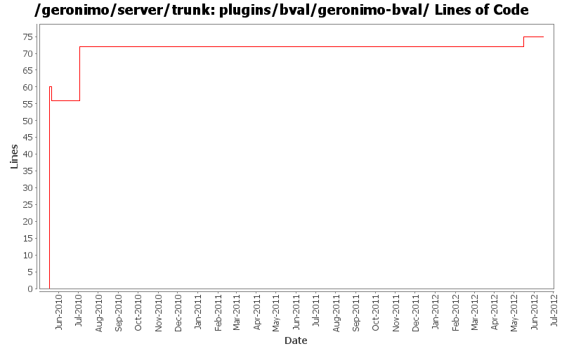

[root]/plugins/bval/geronimo-bval
 src
(0 files, 0 lines)
src
(0 files, 0 lines)
 main
(0 files, 0 lines)
main
(0 files, 0 lines)
 java
(0 files, 0 lines)
java
(0 files, 0 lines)
 org
(0 files, 0 lines)
org
(0 files, 0 lines)
 apache
(0 files, 0 lines)
apache
(0 files, 0 lines)
 geronimo
(0 files, 0 lines)
geronimo
(0 files, 0 lines)
 bval
(4 files, 486 lines)
bval
(4 files, 486 lines)

| Author | Changes | Lines of Code | Lines per Change |
|---|---|---|---|
| Totals | 8 (100.0%) | 85 (100.0%) | 10.6 |
| djencks | 2 (25.0%) | 76 (89.4%) | 38.0 |
| xiaming | 2 (25.0%) | 5 (5.9%) | 2.5 |
| rickmcguire | 2 (25.0%) | 2 (2.4%) | 1.0 |
| genspring | 1 (12.5%) | 2 (2.4%) | 2.0 |
| dwoods | 1 (12.5%) | 0 (0.0%) | 0.0 |
Update trunk version to 4.0.0-SNAPSHOT
1 lines of code changed in 1 file:
Merge 1333350,1333352,1334031,1334300,GERONIMO-6345,GERONIMO-6348 into trunk
4 lines of code changed in 1 file:
pick up the latest geronimo BV bundle.
2 lines of code changed in 1 file:
[maven-release-plugin] prepare release 3.0-M2
1 lines of code changed in 1 file:
[maven-release-plugin] prepare branch 3.0-M2
1 lines of code changed in 1 file:
GERONIMO-5521 make bval classes available in app client so validator can be constructed
16 lines of code changed in 1 file:
updates to use new apache-bval aggregate bundle instead of individual bval-core and bval-jsr303 bundles
0 lines of code changed in 1 file:
GERONIMO-5221 very basic support for unconfigured Validator and ValidatoryFactory
60 lines of code changed in 1 file: